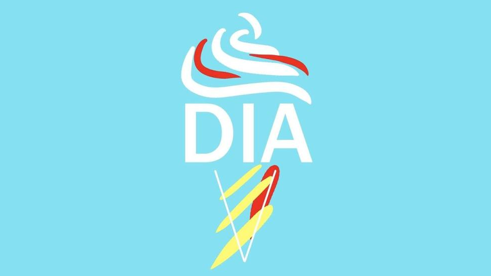

Machine Learning Engineer with 1+ years of experience in designing and developing ML models and systems.
Proficient in generating, augmenting & analyzing large datasets, researching and implementing state of art solutions to challenging problems, and communicating well with a team in a hybrid environment.


Being challenged with different tasks from labeling the data to developing cutting-edge AI models at
Tackle allowed me to find my passion in Machine Learning.

Being a Data Analyst exposed me to large amounts of data to infer useful insights and
provide tutors at Knox College with overall performance and feedback.

Working at the Help Desk helped me learn how to communicate clearly about technology with people from different tech backgrounds and prioritize and complete the tasks with the team.

Building my own Start Up company and managing the teams exposed me to various business problems, such as marketing strateges, website and content creation.

Being an RA taught me how to develop friendly - professional relationships with a diverse group of students, work under stressful circumstances and manage my time.

Being a TA for an introductory CS class helped me develop deep connections with students interested in CS and make their experience plausible

Working along with Health Services to ensure that campus is a safe place for our students.

Being an STEAM Education Intern helped me give back to the community and nurture interest in science in children aging from 10 to 12.

Being a Science Technician Assistant exposed me to fixing different types of equipment from labs and helping students to develop their personal projects.

Working as a Tutor helped me make sure that Physics students understand crucial physics concepts to see how fascinating the subject is.